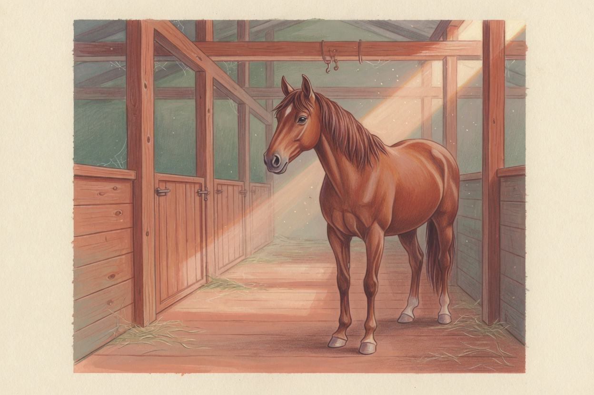
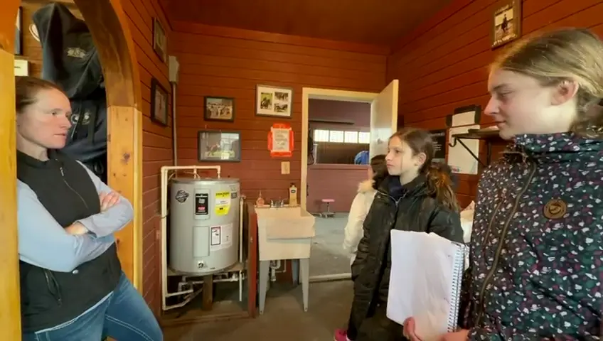
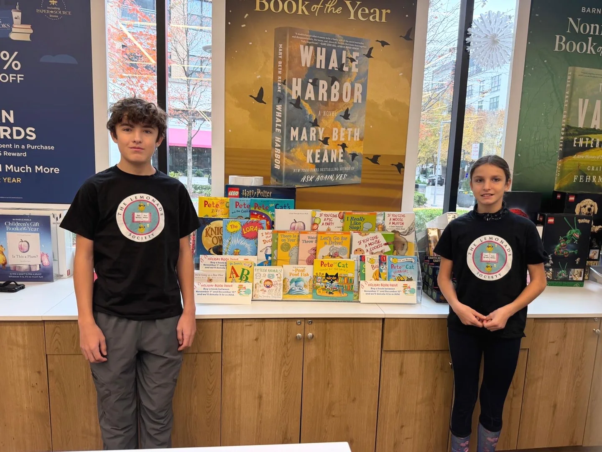

Featured guide
Do ponies behave differently from horses?
Size tells you how tall an animal is. Getting to know the individual tells you much more about how it might act.
Read the guide
For curious animal lovers
From hoof care at the barn to questions for the people who look after animals, come explore with Charlotte.
Featured guide
Size tells you how tall an animal is. Getting to know the individual tells you much more about how it might act.
Read the guide
At the barn
Charlotte goes to check on Crispy and wonders how a trainer knows when a horse needs more time.
View story
At the zoo
A visit to the National Zoo gets Charlotte wondering what it takes to care for a growing elephant.
View story
At home
Three young puppies are growing up, learning to play, and getting to know their surroundings.
View story
Hi, I’m Charlotte. I love animals and I love asking questions.
More about Charlotte
Charlotte co-founded a book club that picks and packs books to share with young readers.
Explore The Lemonade Society